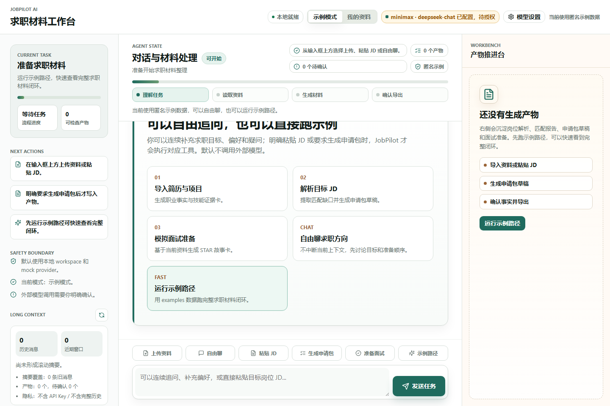
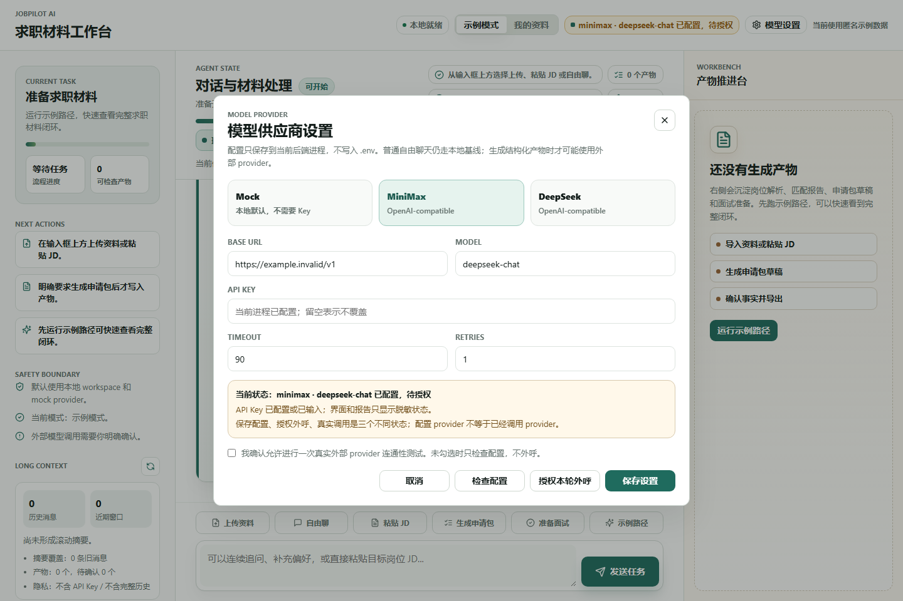
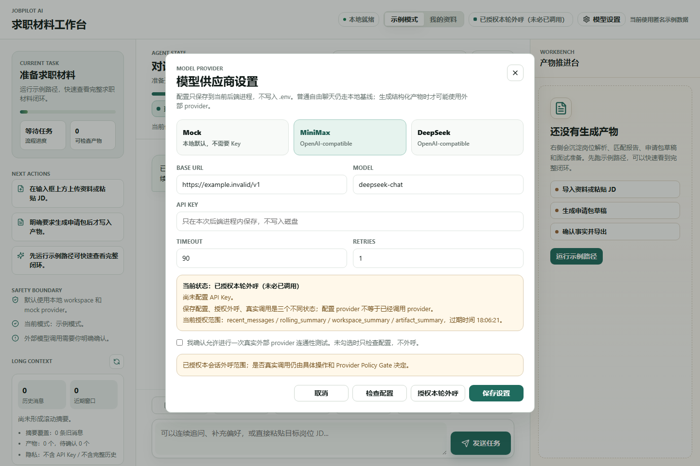
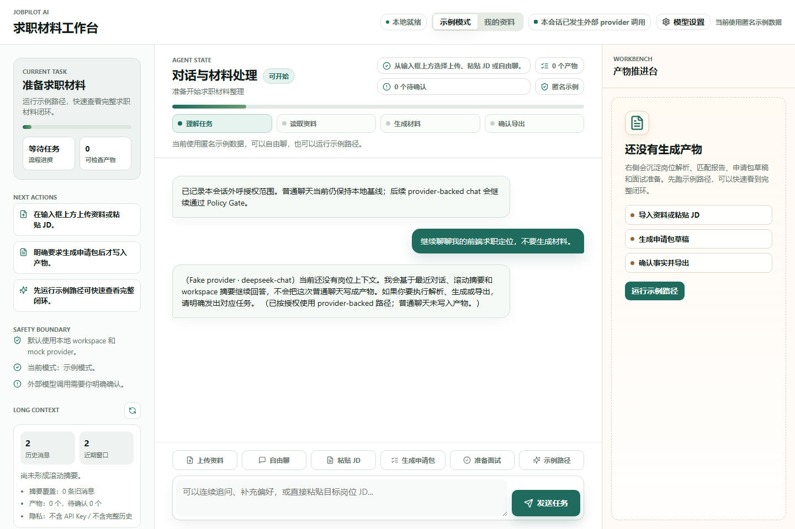
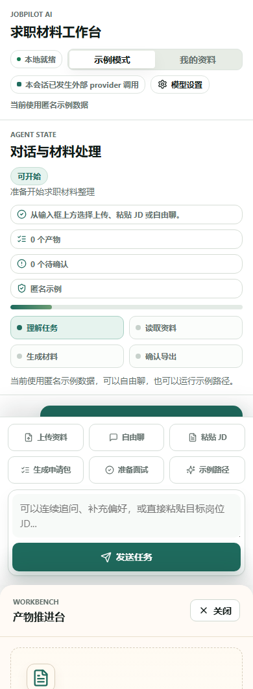

目标架构
- Chatbox Experience Shell 展示 provider 状态、长对话上下文、workspace 生命周期和推进台
- FastAPI 提供 provider status/preferences/consent、chat message、chat context、workspace lifecycle 和 diagnostics routes
- Chat Orchestrator 在 provider_opt_in 下先检查 consent 和 tool intent，再选择 provider-backed fake adapter 或 local fallback
- Provider Policy Gate 默认拒绝未授权外呼；configured 不等于 called
- Long Context Manager 使用 recent window、rolling summary、workspace snapshot 和 retrieved artifact blocks
- Workspace Lifecycle 仅执行 metadata-only backup、cleanup dry-run、migration dry-run 和 redacted diagnostics
当前实现
- P6-M1 provider 设置和授权入口已在 UI 与 API 中可见
- P6-M2 当前验收使用 JOBPILOT_ENABLE_FAKE_PROVIDER_CHAT=1，不执行真实 MiniMax/DeepSeek 调用
- P6-M3 上下文摘要接口已接入左侧 Long context 面板
- P7-M1/M2 workspace 操作入口已接入左侧 Workspace ops 面板，默认不删除、不迁移 apply
- 本报告只证明合成/示例数据和 fake provider 路径，不证明真实个人资料或真实外部 provider 质量
自动化步骤
| # | 步骤 | 动作 | 结果 |
|---|---|---|---|
| 1 | 打开 Chatbox 工作台 | goto | passed |
| 2 | 等待首页渲染 | waitText | passed |
| 3 | 桌面初始状态 | screenshot | passed |
| 4 | 打开模型设置 | clickText | passed |
| 5 | 等待模型设置弹窗 | waitText | passed |
| 6 | 模型设置与 provider 状态 | screenshot | passed |
| 7 | 授权本轮外呼 | clickText | passed |
| 8 | 等待授权提示 | waitText | passed |
| 9 | Provider 已授权但未必调用 | screenshot | passed |
| 10 | 关闭模型设置 | clickText | passed |
| 11 | 输入 provider-backed 自由聊天 | fill | passed |
| 12 | 发送 provider-backed 自由聊天 | clickText | passed |
| 13 | 等待 fake provider 回复 | waitText | passed |
| 14 | Fake provider-backed 回复和上下文面板 | screenshot | passed |
| 15 | 生成备份清单 | clickText | passed |
| 16 | 等待备份清单 | waitText | passed |
| 17 | Workspace backup manifest 证据 | screenshot | passed |
| 18 | 生成诊断报告 | clickText | passed |
| 19 | 等待诊断报告 | waitText | passed |
| 20 | Diagnostics 脱敏证据 | screenshot | passed |
| 21 | 移动端重新打开 | goto | passed |
| 22 | 等待移动端首页 | waitText | passed |
| 23 | 移动端可视度 | screenshot | passed |
验收标准
- 默认不把 provider configured 说成 called
- 授权外呼与真实调用状态可区分
- fake provider-backed 普通聊天不写 artifact
- 长上下文面板展示 recent window、rolling summary、workspace snapshot 和隐私边界
- workspace backup/cleanup/migration/diagnostics 均不执行删除或迁移 apply
- 报告明确未验证真实 provider、真实个人资料、SaaS、ASR、会议平台和自动投递
命令结果
| 命令 | 状态 | 证据 |
|---|---|---|
.venv/bin/python -m pytest tests/evals/test_p6_provider_backed_chat_eval.py tests/evals/test_p6_provider_opt_in_eval.py tests/evals/test_p6_long_context_manager_eval.py tests/evals/test_p7_workspace_lifecycle_eval.py | passed | 9 passed, 1 warning |
npm --prefix apps/chatbox run build | passed | tsc && vite build passed |
PRD 规格检视
| PRD / Gate 要求 | 证据 | 结论 |
|---|---|---|
| P6 provider 默认安全 | 模型设置和授权截图；未授权测试返回 consent_required；configured_is_called=false | pass |
| P6 provider-backed chat 可控且可降级 | fake provider 成功、timeout fallback 自动化测试；截图展示 Fake provider 回复 | pass for fake provider path |
| P6 长程连续对话 | pytest 覆盖 24 轮用户输入/48+ 消息，recent_count=12，rolling summary 覆盖旧消息；UI 展示 Long context | pass for 20-50-turn bounded context baseline |
| P6 Tool Safety | 普通 provider-backed 聊天 artifacts=[]；明确 JD 工具意图跳过 provider free chat 并走工具链 | pass |
| P7 workspace lifecycle | backup manifest-only、cleanup dry-run、migration dry-run、diagnostics metadata-only 测试与截图 | pass for non-destructive path |
代码检视
| 区域 | 结论 | 级别 |
|---|---|---|
| Provider-backed chat | 新增 adapter 默认 fake/disabled，真实 provider 需要 JOBPILOT_ALLOW_REAL_PROVIDER_CHAT=1 且已授权；不会默认外呼。 | pass |
| Provider logs | provider_chat_invocation 记录脱敏元数据、状态、fallback 和错误类型；不记录 API Key 或 raw response。 | pass |
| Frontend | 左侧新增 Long context 与 Workspace ops；按钮均调用只读/dry-run 或 metadata-only 接口。 | pass |
文档审计
| 区域 | 结论 | 状态 |
|---|---|---|
| P6/P7 边界 | 文档持续区分 fake provider、受控真实 provider、真实资料复验和 SaaS 后续范围。 | pass |
| 虚假验收防护 | 报告声明不证明真实 provider 质量、不证明真实个人资料路径、不证明无限上下文。 | pass |
截图证据

evidence/p6p7_acceptance/p6p7-desktop-initial.png
evidence/p6p7_acceptance/p6p7-provider-settings.png
evidence/p6p7_acceptance/p6p7-provider-consented.png
evidence/p6p7_acceptance/p6p7-fake-provider-chat.png
evidence/p6p7_acceptance/p6p7-workspace-backup.png
evidence/p6p7_acceptance/p6p7-diagnostics.png
evidence/p6p7_acceptance/p6p7-mobile-initial.png未验证范围与审计意见
- 未执行真实 MiniMax、DeepSeek 或 OpenAI-compatible provider 外呼
- 未读取或验收用户真实个人资料
- 未执行 workspace 删除、清空、cleanup apply 或 migration apply
- 未实现 SaaS、多租户、Billing、ASR、会议平台、自动投递、MCP/CLI
- 未声明真正无限 token、无限上下文或无限成本对话
当前可以作为 P6/P7 自动化候选验收证据：fake provider-backed 路径、长上下文基线、非破坏性 workspace lifecycle 和 diagnostics 通过；真实 provider 和真实个人资料仍需单独高风险确认。